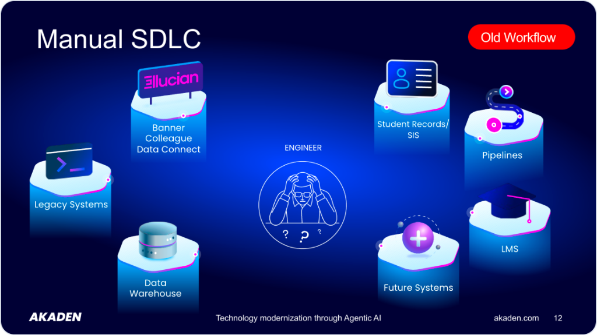
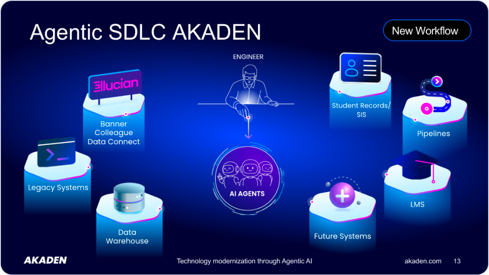

1
Assessment
Read old workflows — on-prem code or an existing pipeline — and manually diagram data flow, tables, and business rules by hand.
Build new pipelines, port legacy integrations to Ellucian SaaS, or maintain what you already have — with agents that already know Ethos APIs, Banner PL/SQL, and Colleague UniBasic/Envision. Wherever you are in your modernization journey.
Read old workflows — on-prem code or an existing pipeline — and manually diagram data flow, tables, and business rules by hand.
Hand-configure the logic, whether that's PL/SQL, UniBasic, or Ellucian's Integration Designer. Hand-write transformations and error-handling. Repeat for every integration.
Write tests from scratch, debug one failure at a time, monitor with no tooling carried over from the build phase.
It's real engineering work. But the knowledge of how any of it works usually lives in one engineer's head — and walks out the door when they move on.
Agentic AI stopped being a demo. It's how software actually gets built now — specialized agents doing bounded, verifiable engineering steps under human supervision, not a chatbot guessing at the whole job in one shot.
So here's Akaden — built specifically for that shift, for Banner and Colleague.
Same institution, same systems — Legacy Systems, Data Warehouse, Ellucian Banner/Colleague/Data Connect, Student Records/SIS, LMS, Future Systems. Only the engineer's position changes.


Three things, combined — not a general-purpose coding assistant pointed at your systems.
Specialized agents — Specification Builder, Pipeline Builder, QA — that plan and execute bounded, verifiable engineering steps. The core of the platform.
Ethos APIs, Data Connect, Pipeline Template structure — already built in.
Banner PL/SQL, Colleague UniBasic/Envision, and years of hand-built third-party integration patterns, encoded into the agents.
Together: an agentic AI platform built specifically for higher-ed integration work — governed, step-by-step, delivered substantially faster than building by hand.
Four scenarios, at different stages of proof — labeled honestly rather than blurred together.
Port a live on-prem Banner or Colleague integration into a documented, maintainable Data Connect pipeline — preserving the original business logic.
Requirements → specification → implementation → testing → deployment → monitoring — a dedicated agent built for each step.
Analyze, document, and maintain on-prem PL/SQL or UniBasic integrations, or connect Banner/Colleague to external systems and data warehouses — no Data Connect or SaaS migration required.
Capabilities already proven in hand-built modernization work, being built into Akaden's agentic workflow next:
Domain knowledge built in. Ethos APIs, Pipeline Template structure, Banner PL/SQL, Colleague UniBasic/Envision, external systems, databases, reporting and data warehouse tools — it already knows your world.
Governed, reviewable execution. Every step is reviewed and reversible. You supervise; the agent doesn't act alone.
Validated by practitioners. ABCloudz, an Ellucian Advantage Tier Partner with years of hands-on Banner and Colleague migration work, puts Akaden to work across real customer engagements — and their field feedback shapes what ships next.
Governed, step-by-step execution means fewer surprises in production, delivered faster than building by hand.
The repetitive 5-to-50x manual work per integration — that's what the agents take on, not your team.
Spec, pipeline, test, deploy, and monitor in one workspace, instead of a different disconnected tool for each phase.
ABCloudz's professional services team uses Akaden daily across multiple customer engagements — building, maintaining, monitoring, and debugging Ellucian Student integrations, and feeding real field feedback back into the product. Not a lab demo.
"The same agent architecture extends to on-prem Banner and Colleague work — analyzing, documenting, and maintaining integrations with no Data Connect or SaaS migration required. We're actively building out proof points here — ask us for a live walkthrough."
No. Akaden is built on Ellucian's public Ethos APIs and Data Connect platform — an independent platform, not an Ellucian product or Ellucian-endorsed integration. ABCloudz, an Ellucian Advantage Tier Partner, is one of the professional services teams using it daily across customer engagements.
Yes. Akaden's agents already understand Banner PL/SQL and Colleague UniBasic/Envision. Use it today to analyze, document, and maintain what you already have — no SaaS migration required — and that work carries forward when you do move to Ellucian SaaS.
No. Every step is reviewed before anything ships. You can pause or take over at any point.
No. It changes what they spend time on — from doing every step by hand to supervising the work and reviewing the output.
Not yet inside Akaden's agentic workflow — that's on the roadmap, not available today.
We're onboarding early partners individually right now. Book a demo and we'll talk specifics for your institution.
Ellucian Ethos APIs, on-prem Banner and Colleague databases, GitLab, external systems, reporting tools, data warehouses, and delivery targets like Amazon S3.